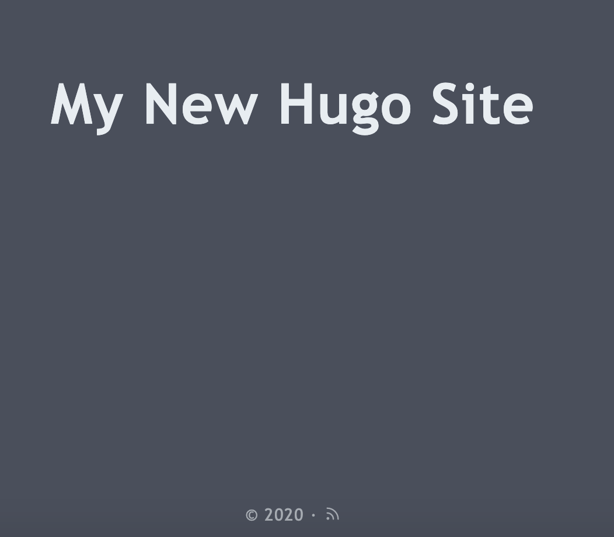
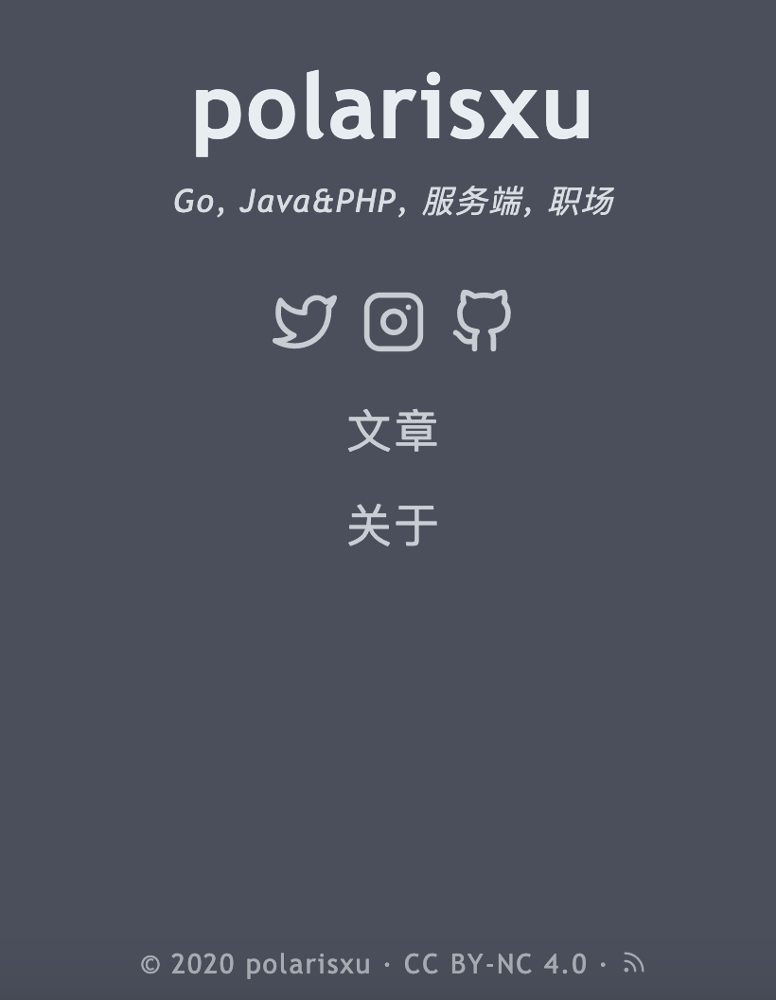
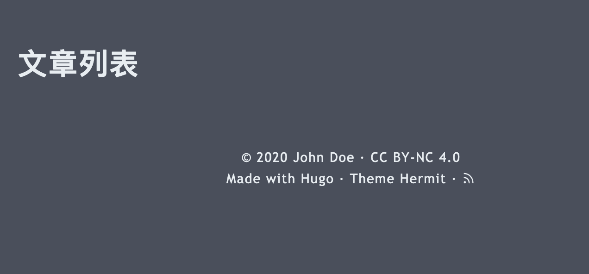
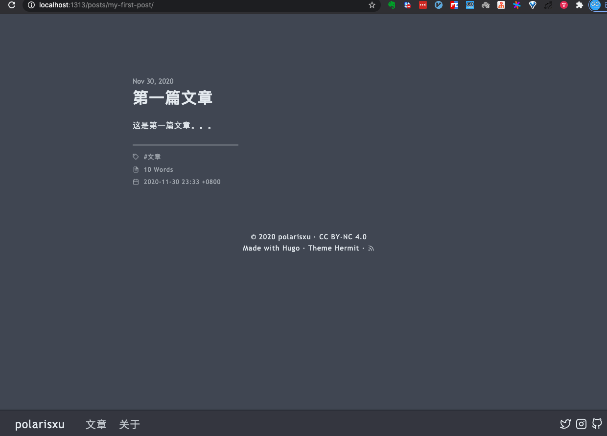
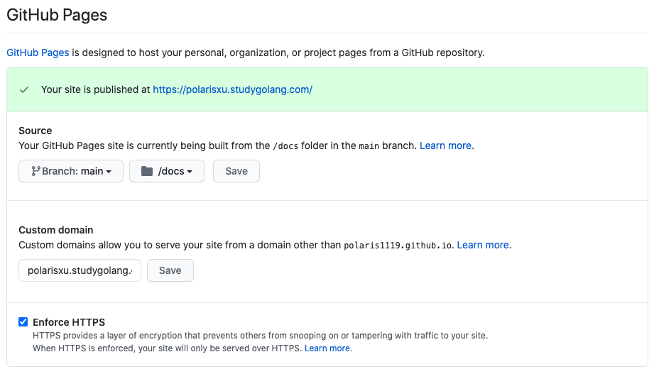

Hugo + GitHub Pages 搭建自己的网站
大家好，我是站长 polarisxu。
很早之前，我使用 WordPress 搭建了个人博客：http://blog.studygolang.com，毕竟那时候 WordPress 是首选。现如今，大家似乎更喜欢静态博客，各种语言的静态博客生成器轮子不断，比如 Go 语言的 Hugo 就是一个静态博客生成器。我个人认为，静态博客生成器流行的一个很大原因，是 Markdown 的流行，开发人员习惯了使用 Markdown 进行写作。
对于我，有另外一个痛点。最近在公众号写了一些文章，希望同步到博客，只是文字还好处理些，如果涉及到图片，微信公众号上传了一次，博客还得再来一次，挺费劲的。同时，为了保留最原始的文字，原始博文放在 GitHub 是一个不错的选择（用 Git 保留你的修改，不要太棒好嘛！）。
既然博文都保存在了 GitHub 上，怎么方便快速的基于 GitHub 来搭建自己的博客呢？（有些人直接就让在 GitHub 阅读，虽然可以，但体验还是不太好，而且看起来没有那么高大上，是不是？）
我想过使用 GitBook 来搭建，安装时，发现官方已经不维护 gitbook-cli 了，而且每次新增加文章，都得维护目录等，也是挺费劲的。于是放弃了这种方式。
这时我想到了通过静态博客生成器来搞。最喜欢 Go，自然 Hugo 成为第一选择。
废话不多少，记录下我搭建的过程。
01 安装 Hugo
你可以通过 https://github.com/gohugoio/hugo/releases 下载相应的安装包，我喜欢源码安装。
$ go get -v github.com/gohugoio/hugo
如果你也想通过源码安装，请自行准备好 Go 环境。
查看版本同时验证是否安装成功：（查看该文时，最新版本可能变了）
$ hugo version
Hugo Static Site Generator v0.76.5 darwin/amd64 BuildDate: unknown
02 使用 Hugo
在你本机某个目录执行如下命令，创建一个网站，我使用 polarisxu 这个名字。
$ hugo new site polarisxu
Congratulations! Your new Hugo site is created in /Users/xuxinhua/project/testhugo/polarisxu.
Just a few more steps and you're ready to go:
1. Download a theme into the same-named folder.
Choose a theme from https://themes.gohugo.io/ or
create your own with the "hugo new theme <THEMENAME>" command.
2. Perhaps you want to add some content. You can add single files
with "hugo new <SECTIONNAME>/<FILENAME>.<FORMAT>".
3. Start the built-in live server via "hugo server".
Visit https://gohugo.io/ for quickstart guide and full documentation.
进入 polarisxu 目录，查看目录结构如下：
$ tree
.
├── archetypes
│ └── default.md
├── config.toml
├── content
├── data
├── layouts
├── static
└── themes
6 directories, 2 files
接下来需要为我们的网站指定一个主题，这里我们选择 https://themes.gohugo.io/hermit/ 这个主题。
$ git clone https://github.com/Track3/hermit.git themes/hermit
将该主题增加到网站的配置文件中，这样才能生效：
echo 'theme = "hermit"' >> config.toml
测试下是否成功，运行：
$ hugo serve
打开浏览器访问：http://localhost:1313/，看到如下内容：

对该主题进行一些配置。一般的，主题会有例子，我们直接拷贝例子中的 config.toml 覆盖网站的 config.toml：
$ cp -rf themes/hermit/exampleSite/config.toml .
再次运行 hugo serve，页面如下：
可见，这个页面内容可以通过 config.toml 配置，根据需要做一些修改，页面变成这样：（不同主题可能不一样）

不过点击 「文章」 和 「关于」 都报 404。
增加列表页
在 content/posts 目录下新增一个文件：_index.md，内容如下：
---
title: "文章列表"
---
这时（hugo serve 会自动编译）点击 Posts，页面如下：

增加 About 页面
同样的，在 content/posts 目录下新增文件 about.md，正文内容随意，类似这样：
---
title: "关于"
date: "2020-12-01"
---
这是关于页面，polarisxu。
测试文章
接着，增加一篇测试文章：
$ hugo new posts/my-first-post.md
这会在 content/posts 目录下生成一个 my-first-post.md 文件，里面内容如下：
---
title: "My First Post"
date: 2020-11-30T23:33:03+08:00
draft: true
toc: false
images:
tags:
- untagged
---
其中 --- 之间的数据是文章的元数据，在 Hugo 中叫做 Front Matter
。
随意增加一些内容，并做一些修改：（其中 isCJKLanguage: true 用于准确计算中文字数）
---
title: "第一篇文章"
date: 2020-11-30T23:33:03+08:00
draft: false
toc: false
isCJKLanguage: true
images:
tags:
- 文章
---
这是第一篇文章。。。
查看文章详情：http://localhost:1313/posts/my-first-post/。

如果文章完成，可以执行 hugo 命令，生成静态页面。默认会将生成的静态页面放入 public 目录中。
关于 Hugo 更多的定制，比如 theme 的定制，这里不过多讲解，有兴趣的自己琢磨。比如虽然 https://polarisxu.studygolang.com/ 和这里的例子使用了同一个模板，但样子却有不少不同，你可以查看 https://github.com/polaris1119/polarisxu，对比到底做了什么，折腾一番，基本会了。
03 使用 GitHub Pages 部署站点
这是 GitHub 为你和你的项目准备网站的，GitHub Pages 官方站点：https://pages.github.com/，大概就是通过将网站内容放到 GitHub，通过 GitHub Pages 可以弄出一个自己的站点。它最常使用的是通过 Jekyll 这个站点生成器生成静态页面，有兴趣的自行查阅资料了解。我们应该使用 Hugo 生成静态页面，因此直接将静态页面部署到 GitHub Pages。
创建一个特殊的仓库
在 GitHub 上创建一个仓库，不过仓库名有特殊要求。如果是个人账号，比如我的 GitHub ID 是 polaris1119，则仓库名是：polaris1119.github.io；如果是组织账号，比如 studygolang 这个组织，则仓库名是：studygolang.github.io。
配置仓库
进入仓库的 Settings 页面，有一个区块叫 GitHub Pages，可以配置站点信息，比如内容来源、自定义域名、是否启用 HTTPS 等。

说明如下：
- 数据源默认使用主分支下的根目录，我个人建议改为 docs 目录；
- 自定义域名如果留空，则默认仓库名就是你的域名，比如我这里的 polaris1119.github.io；
- 如果配置了自定义域名，则需要在你的域名配置上 CNAME 记录。我这里就是 polarisxu 这个子域名的 CNAME 值是 polaris1119.github.io；
- 如果配置了自定义域名，启用 HTTPS 需要等待一段时间才能生效；
你可以在该仓库上正确的位置放置一个 index.html 文件，测试是否正常。
小细节：避免 Jekyll 起作用，可以在仓库根目录放一个空文件，文件名： .nojekyll
部署我们的站点
这里有两种做法。
1）方法一
上面 Hugo 项目的代码直接推送到 GitHub Pages 这个仓库中，在通过 Hugo 生成静态页面时，指定目标目录为 docs：
$ hugo -d docs
这样 docs 下面的内容就是静态页面，是网站最终展示的内容。
2）方法二
Hugo 源网站内容单独放在一个仓，比如我放在了 https://github.com/polaris1119/polarisxu 这个仓库。这样分两个仓库相对麻烦先。但也有一个好处：GitHub Pages 站点有内容大小限制：不能超过 1 GB，这样分开可以节省空间，而且 Hugo 内容和站点解耦。
因此每次在 Hugo 站点项目写完文章后，需要生成静态内容，拷贝到 GitHub Pages 仓库，提交代码等。把这些步骤写成一个脚本，瞬间变简单了。
#!/bin/sh
hugo
cp -rf public/* ../polaris1119.github.io/docs/
cd ../polaris1119.github.io/
git add * && git commit -m 'new article' && git push
cd ../polarisxu/
04 总结
技术人员搞个自己的博客还是不错的，开始时花些时间折腾一个自己喜欢的站点，之后就是抽时间产出内容了。通过上面的介绍可知，现在搭建一个站点，完全不需要投入任何 money。
怎么样？有没有冲动自己搞一个。欢迎交流~